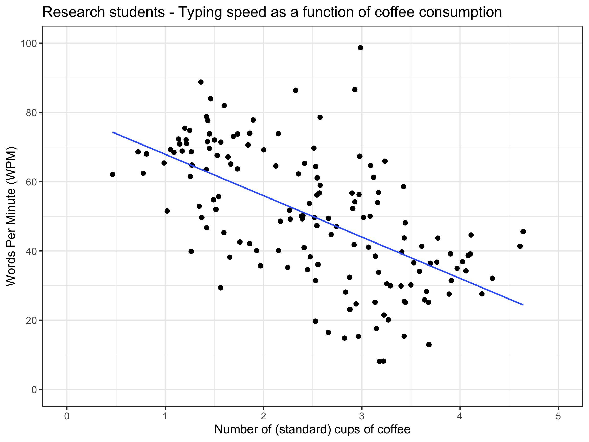

Simpson’s Paradox is essentially an extreme form of confounding, characterised by a reversal of the effect estimate sign.
Published
March 8, 2024
A thought exercise this week in possible ways to interpret the following plot. This comes from hypothetical (simulated) data that purports to assess research students productivity (measured by how quickly they can type) as a function of the number of standard cups of coffee they drink in a day.
Note
I am no way suggesting that these findings apply to MSNI research students who no doubt remain highly productive throughout their research careers.
Code
library(bayestestR)library(ggplot2)library(dplyr)# Simulate some Simpson's paradox style data set.seed(253445)dat <-simulate_simpson(n =50,r =0.5,groups =3,difference =2,group_prefix ="G_")# A couple of variable manipulations to get the variables to look the way I wantdat$V2 <- (dat$V2*10)+90dat$V1 <- (dat$V1+1)/2# Rename groupsdat <- dat |>mutate(Group =case_when(Group =="G_1"~"Honours", Group =="G_2"~"Masters", Group =="G_3"~"PhD")) |>rename(`Student Type`= Group)# Plot aggregated dataggplot(dat, aes(x = V1, y = V2)) +geom_point(size =3) +geom_smooth(method ="lm", se = F) +ggtitle("Research students - Typing speed as a function of coffee consumption") +xlab("Number of (standard) cups of coffee") +ylab("Words Per Minute (WPM)") +scale_y_continuous(limits =c(0, 100), breaks =seq(0, 100, by =20)) +scale_x_continuous(limits =c(0, 5), breaks =seq(0, 5, by =1)) +theme_bw(base_size =18)

If they define typing speed as total words/total time elapsed then the time spent buying/making coffee, holding cups and drinking would inflate the denominator without the numerator increasing and make it appear that typing speed has decreased as more time is spent not typing. Would be very hard to get the speed back up just by typing faster in that scenario. So clearly the workplace should be providing each worker with a pre-made, heated camelbak filled with coffee each day to improve productivity. Hands free coffee drinking! (Robb - former Research Student)
The best response of the week has to go to Robb for this very well considered and justified attempt to have the bosses supply one of these (I’m assuming this is what you really meant Robb):
New MSNI Coffee Facilities?
So what is this scatterplot showing? Well there appears to be a relationship between coffee drinking and typing speed - drinking more cups of coffee seems to be associated with reduced typing speed (note that I am not suggesting that drinking more coffee causes reduced typing speed, merely that there is a correlation). Fitting a regression model to these data produces a best-fitting line with a negative slope or coefficient. It is interesting though - is this direction of ‘effect’ what one might reasonably expect? Perhaps, but my intuition would be that drinking more coffee might naturally correlate with a faster typing ability (don’t forget I’ve made up the data to suit the story I’m telling - I can only guess as to whether these associations are real or not).
So what else could be going on to produce the pattern that you see? Well, you might then naturally think that there is some other ‘lurking’ variable (i.e. a confounder) that is distorting or masking the true relationship between coffee consumption and typing speed leading to the association that we actually observe. And, you’d be right…
It just so turns out that the program that the research student is enrolled in (Honours, Masters, PhD) is an important factor in teasing apart the coffee -> typing speed association. If we now condition on or control for Student Type we see a completely different picture regarding that association. As before, we can similarly fit regression lines to these three subgroups. For each Student Type drinking more coffee is now associated with a faster typing speed (the slope/coefficient of those lines are now positive), but we can also observe some other interesting findings. On average, Honours students drink the fewest cups of coffee and have the fastest typing speed - they are fresh and motivated. In contrast, PhD students drink the most coffee and have the slowest typing speed. My take on this (and again I’m sure this doesn’t apply to MSNI students), is that by the time you’ve become a PhD student, you have more caffeine coursing through your system than actual blood, but in fact this does little to help your productivity which is more impaired by your sheer exhaustion, increasing cynicism towards academic life and typing-related repetitive strain injury (maybe this is just a realisation of my own PhD experience 🤔).
Code
ggplot(dat, aes(x = V1, y = V2, color =`Student Type`)) +geom_point(size =3) +geom_smooth(method ="lm", se = F) +ggtitle("Research students - Typing speed as a function of coffee consumption") +xlab("Number of (standard) cups of coffee") +ylab("Words Per Minute (WPM)") +scale_y_continuous(limits =c(0, 100), breaks =seq(0, 100, by =20)) +scale_x_continuous(limits =c(0, 5), breaks =seq(0, 5, by =1)) +theme_bw(base_size =18) +theme(legend.position =c(1,1), legend.justification =c(1.1,1.1))
You might have come across Simpson’s Paradox in your statistical reading - it’s a fairly common epidemiological bias but it can have important implications for the interpretation of evidence from observational studies, including yours. And so to that end it’s not purely an exercise for academic interest. Simpson’s Paradox is a version of Lord’s Paradox (differentiated by whether exposure and outcome variables are categorical, or continuous, or a combination of both) but at the end of the day they are both a type of Reversal Paradox. Regardless of the variable type, a common characteristic is shared in the Reversal Paradox: the association between two variables can be reversed, diminished, or enhanced when another variable (confounder) is statistically controlled for.
Important
Observed associations at the aggregated level - when important underlying group structures aren’t realised - or worse still, ignored - can potentially reverse when the data are disaggregated and those underlying group structures are considered in the analysis. In other words, the observed association across all groups can be quite different to that within each group. This is Simpson’s Paradox in a nutshell.
A canonical example of Simpson’s Paradox is the relationship between body mass and longevity across different species of animals. In general, across all animal species, larger animals (elephants, whales, etc) tend to live longer than smaller animals (rodents, birds, etc). There are of course exceptions to that rule - I’m looking at you Mr Tortoise. But when you look within species, an inverse correlation typically exists - being heavier tends to be associated with a shorter life.
These examples highlight the importance of understanding your data and the research questions you are asking. Prior knowledge of potential variable relationships (measured and unmeasured) and underlying causal theory should be the primary considerations guiding you in the modelling of your data. Simply following variable selection techniques based on statistical criteria can still lead to models that are consistent and replicable, but also very easily lead to erroneous conclusions because you haven’t considered a pesky ‘lurking’ factor that can leave you with the equivalent of statistical and scientific egg on your face.
Source Code
---title: "Simpson's Paradox - Contextualised for Research Students"date: 2024-03-08categories: [concept, code, visualisation]description: "Simpson's Paradox is essentially an extreme form of confounding, characterised by a reversal of the effect estimate sign."---A thought exercise this week in possible ways to interpret the following plot. This comes from hypothetical (simulated) data that purports to assess research students productivity (measured by how quickly they can type) as a function of the number of standard cups of coffee they drink in a day.::: callout-noteI am no way suggesting that these findings apply to MSNI research students who no doubt remain highly productive throughout their research careers.:::```{r}#| label: setup#| message: falselibrary(bayestestR)library(ggplot2)library(dplyr)# Simulate some Simpson's paradox style data set.seed(253445)dat <-simulate_simpson(n =50,r =0.5,groups =3,difference =2,group_prefix ="G_")# A couple of variable manipulations to get the variables to look the way I wantdat$V2 <- (dat$V2*10)+90dat$V1 <- (dat$V1+1)/2# Rename groupsdat <- dat |>mutate(Group =case_when(Group =="G_1"~"Honours", Group =="G_2"~"Masters", Group =="G_3"~"PhD")) |>rename(`Student Type`= Group)# Plot aggregated dataggplot(dat, aes(x = V1, y = V2)) +geom_point(size =3) +geom_smooth(method ="lm", se = F) +ggtitle("Research students - Typing speed as a function of coffee consumption") +xlab("Number of (standard) cups of coffee") +ylab("Words Per Minute (WPM)") +scale_y_continuous(limits =c(0, 100), breaks =seq(0, 100, by =20)) +scale_x_continuous(limits =c(0, 5), breaks =seq(0, 5, by =1)) +theme_bw(base_size =18)```*If they define typing speed as total words/total time elapsed then the time spent buying/making coffee, holding cups and drinking would inflate the denominator without the numerator increasing and make it appear that typing speed has decreased as more time is spent not typing. Would be very hard to get the speed back up just by typing faster in that scenario. So clearly the workplace should be providing each worker with a pre-made, heated camelbak filled with coffee each day to improve productivity. Hands free coffee drinking! (Robb - former Research Student)*The best response of the week has to go to Robb for this very well considered and justified attempt to have the bosses supply one of these (I'm assuming this is what you really meant Robb):So what is this scatterplot showing? Well there appears to be a relationship between coffee drinking and typing speed - drinking more cups of coffee seems to be associated with reduced typing speed (note that I am not suggesting that drinking more coffee *causes* reduced typing speed, merely that there is a correlation). Fitting a regression model to these data produces a best-fitting line with a negative slope or coefficient. It is interesting though - is this direction of 'effect' what one might reasonably expect? Perhaps, but my intuition would be that drinking more coffee might naturally correlate with a faster typing ability (don't forget I've made up the data to suit the story I'm telling - I can only guess as to whether these associations are real or not).So what else could be going on to produce the pattern that you see? Well, you might then naturally think that there is some other 'lurking' variable (i.e. a confounder) that is distorting or masking the true relationship between coffee consumption and typing speed leading to the association that we actually observe. And, you'd be right...It just so turns out that the *program* that the research student is enrolled in (Honours, Masters, PhD) is an important factor in teasing apart the `coffee -> typing speed` association. If we now *condition on* or *control* for `Student Type` we see a completely different picture regarding that association. As before, we can similarly fit regression lines to these three subgroups. For each `Student Type` drinking more coffee is now associated with a faster typing speed (the slope/coefficient of those lines are now positive), but we can also observe some other interesting findings. On average, Honours students drink the fewest cups of coffee and have the fastest typing speed - they are fresh and motivated. In contrast, PhD students drink the most coffee and have the slowest typing speed. My take on this (and again I'm sure this doesn't apply to MSNI students), is that by the time you've become a PhD student, you have more caffeine coursing through your system than actual blood, but in fact this does little to help your productivity which is more impaired by your sheer exhaustion, increasing cynicism towards academic life and typing-related repetitive strain injury (maybe this is just a realisation of my own PhD experience 🤔).```{r}#| label: plot_disaggregated#| message: falseggplot(dat, aes(x = V1, y = V2, color =`Student Type`)) +geom_point(size =3) +geom_smooth(method ="lm", se = F) +ggtitle("Research students - Typing speed as a function of coffee consumption") +xlab("Number of (standard) cups of coffee") +ylab("Words Per Minute (WPM)") +scale_y_continuous(limits =c(0, 100), breaks =seq(0, 100, by =20)) +scale_x_continuous(limits =c(0, 5), breaks =seq(0, 5, by =1)) +theme_bw(base_size =18) +theme(legend.position =c(1,1), legend.justification =c(1.1,1.1))```You might have come across **Simpson's Paradox** in your statistical reading - it's a fairly common epidemiological bias but it can have important implications for the interpretation of evidence from observational studies, including yours. And so to that end it's not purely an exercise for academic interest. **Simpson's Paradox** is a version of **Lord's Paradox** (differentiated by whether exposure and outcome variables are categorical, or continuous, or a combination of both) but at the end of the day they are both a type of **Reversal Paradox**. Regardless of the variable type, a common characteristic is shared in the **Reversal Paradox**: the association between two variables can be reversed, diminished, or enhanced when another variable (confounder) is statistically controlled for.::: callout-importantObserved associations at the *aggregated* level - when important underlying group structures aren't realised - or worse still, ignored - can potentially reverse when the data are *disaggregated* and those underlying group structures are considered in the analysis. In other words, the observed association *across* all groups can be quite different to that *within* each group. **This is Simpson's Paradox in a nutshell.**:::A canonical example of Simpson's Paradox is the relationship between body mass and longevity across different species of animals. In general, across all animal species, larger animals (elephants, whales, etc) tend to live longer than smaller animals (rodents, birds, etc). There are of course exceptions to that rule - I'm looking at you Mr Tortoise. But when you look within species, an inverse correlation typically exists - being heavier tends to be associated with a shorter life.These examples highlight the importance of understanding your data and the research questions you are asking. Prior knowledge of potential variable relationships (measured and unmeasured) and underlying causal theory should be the primary considerations guiding you in the modelling of your data. Simply following variable selection techniques based on statistical criteria can still lead to models that are consistent and replicable, but also very easily lead to erroneous conclusions because you haven't considered a pesky 'lurking' factor that can leave you with the equivalent of statistical and scientific egg on your face.